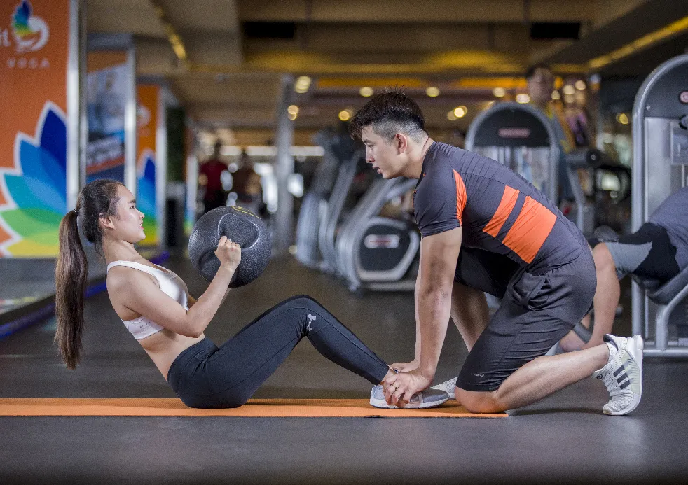

Men’s Health Week 2019 - Maximuscle Workout

June 10th marks the start of Men’s Health Week 2019, a week designed to encourage more men to become active and take an interest in their health.
One man in five dies before he is old enough to retire, Men’s Health Week aims to change that statistic.
Men’s Health Week this year focuses on numbers:
- 37 - a waist size of 37 inches or above puts you at increased of heart disease, diabetes and cancer.
- 150 - men should aim for 150 minutes of moderate physical activity a week.
- 5 - we should aim to eat 5 portions of fruit and veg a day.
- 14 - maximum 14 units of alcohol a week.
- 10 - cigarette smokers die 10 years younger on average than non-smokers.
- 120/80 - normal blood pressure.
- 75% of suicides (3 out of 4) are by men.
Maximuscle have always been a brand that wants to help people achieve their fitness goals and live a healthier life. If you are using this week as a way to get back in the gym and achieve your goals, then why not try this five-day workout plan:
DAY 1
- Warm-up: Row – 5 minutes
- Push Press – 8 x 4
- Bench Press – 8 x 4
- Overhead Press – 8 x 4
- Incline Dumbbell Press – 8 x 4
- Press-ups – Failure x 4
DAY 2
- Warm-up: Row – 5 minutes
- Plyometric Box Jumps – 8 x 4
- Squats – 8 x 4
- Glute Bridge on Bench – 8 x 4
- Deadlift – 8 x 4
- Overhead Press – 8 x 4
- Single Leg Press – Failure x 3 per leg
DAY 3
- Warm-up: Row – 5 minutes
- Power Cleans – 4 to 8 x 4
- Pull-ups – 4 to 8 x 4
- Seated Row – 8 x 4
- Upright Row – 8 x 4
- Medicine Ball Slams – 30 seconds x 4
DAY 4
- Warm-up: Row – 5 minutes
- Sled Drags – 25m x 4
- Front Squats – 8 x 4
- Split Squats – 8 x 4
- Romanian Deadlift – 8 x 4
- Farmers Walk – 25-30 metres x 4
DAY 5
- Warm-up: Row – 5 minutes
- HIIT Training – Running Machine – 30 second sprint, 30 second rest x 10